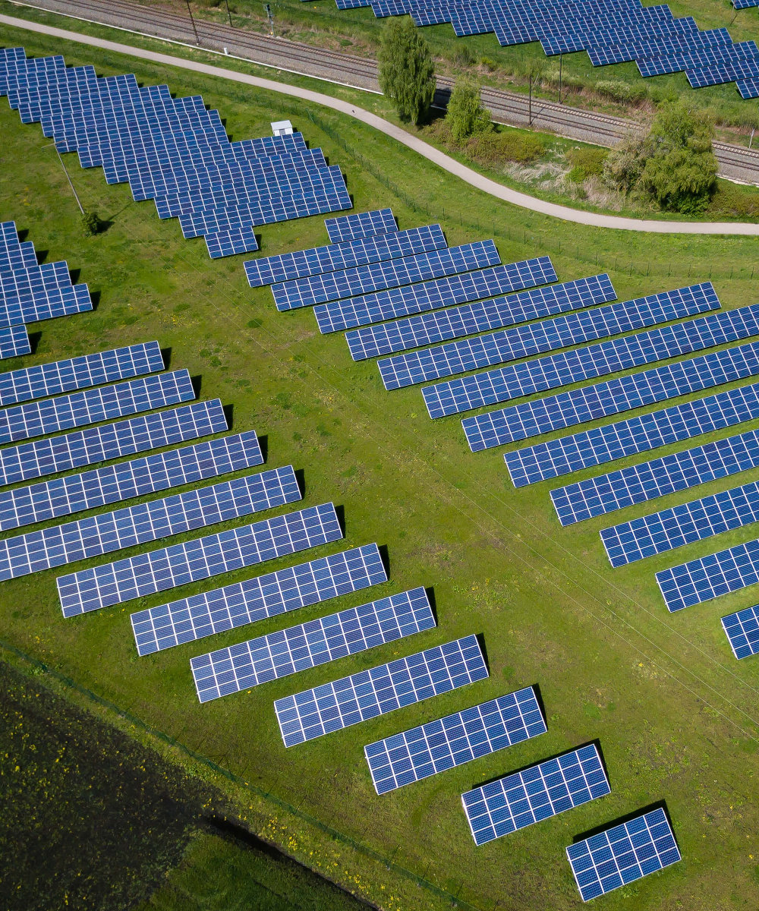

Detecting
Here are a few objects that can be deteted in Earth Observation / Satellite imagery. For each type of object, the minimum resolution that is needed to be able to detect objects is indicated.
Ships

You will find a few datasets with annotated ships in satellite images on Kaggle. It is possible to detect large ships on Sentinel-2 images at 10 m. resolution.
Datasets from Airbus
The Airbus Ship Detection Challenge features a huge dataset of more than 80,000 annotated ships on rougthly 200,000 optical SPOT imagery at 1.5 meters. The best way to solve this task if to use first a classification model to detect if there are any ships at all and then use a segmentation on the remaining imagery to detect the ships. By creating three classes (outside ship, inside ship and borders), it is possible to precisely separate the ships. You will find a lot of information in the notebooks and forums as well as some posts by the winners.
Datasets from Planet
Planet as uploaded on Kaggle a dataset to search for the presence of ships in chips of Planet satellite imagery. The ships in satellite imagery dataset contains extracts from San Franciso Bay using Planet satellite imagery. It is mostly a classification task. There is a Coursera Guided Project based on this dataset: (price 8€ in Jan. 2021)
From C-CORE
And finally the Statoil/C-CORE Iceberg Classifier Challenge offers some radar imagery and a classification task to identify if objects in the images are ships or icebergs.
Solar Panels

Individual Solar Panels
Detection solar panels on roofs needs high resolution imagery. Typically aerial or drone imagery. It is very difficult to achieve with 1.5m or even 50 cm imagery.
Here are a few articles about using machine learning for solar panel detection:
- https://new.engineering.com/story/how-do-you-count-every-solar-panel-in-the-us-machine-learning-and-a-billion-satellite-images
- http://web.stanford.edu/group/deepsolar/home
- https://news.stanford.edu/press-releases/2018/12/19/inventory-indicates-goes-solar/
Solar farms
Solar farms may be easier to detect because that are so much larger. They are actually built by commercial companies who resell the produced energy.
This article present how Astrea built a solar farm detector on Sentinel-2 images. It indicates that the final model had a precision of 92% and a recall of 85% of its solar farm predictions. Unfortunatelly very few details are given except that “the most important factor in model improvement came from getting more training data — not from hyperparameter tuning or testing out different CNN architectures.”
some other article
Wind turbines

Introduction
There are a few more use cases for wind turbines detection. A map of wind turbines at country level can be a great indicator of the country independance toward non renewable energy source.
By associating wind prediction and exact location of wind turbines, it is possible to predict the energy production for upcoming days. This could help traders to guess at future energy prices.
We could also envision to control the correct alignment of the turbines with the wind direction from satellite imagery.
Datasets
It is probable that 2 m. is the minimum resolution to be able to detect wind turbines with a correct accuravy. There does not seem to be a publicly available machine learning dataset for wind turbines. There are nevertheless available databases that can be crossed with available satellite imagery. Here is an extract of the OpenStreetMap database from early 2021 with around 300,000 wind turbines all over the world.
This article presents an initiative from the USGS to map all windmills in the USA.
Other resources
- The USGS has an article about mapping wind turbines
- database
- esri
- wind
Resources
Below are a few interesting resources about Deep Learning and Earth Observation.
Courses
Mooc and challenges
- https://github.com/deepVector/geospatial-machine-learning
- https://github.com/wassname/awesome-satellite-imagery-competitions
- https://github.com/robmarkcole/satellite-image-deep-learning
Articles and books
- https://medium.com/zylapp/review-of-deep-learning-algorithms-for-image-classification-5fdbca4a05e2
- https://medium.com/overture-ai/part-4-image-classification-9a8bc9310891
- https://towardsdatascience.com/object-detection-on-aerial-imagery-using-retinanet-626130ba2203
- https://medium.com/nanonets/how-we-flew-a-drone-to-monitor-construction-projects-in-africa-using-deep-learning-b792f5c9c471
- https://medium.com/analytics-vidhya/a-practical-implementation-of-the-faster-r-cnn-algorithm-for-object-detection-part-2-with-cac45dada619
Datasets

About
About this website
I started this site as a collection of interesting stuff about Deep Learning applied to Satellite Imagery.
- Objects to detect
- Corresponding datasets
- Great models to start with
- Tools that you should use
- Discussion on strategies for the next steps
About me
Please send me your feedback! This website is mostly a “note to self” about what I am currently working on. As such, I have probably made dozens of approximations and missed several dozens other good articles, datasets or contributions.
If you want to make additions and/or amendments to this website, please contact me directly or, if you wish, do not hesitate to fork it on GitHub and send me a Publish Request (PR). This would be awesome.
Thanks to Unsplash for the awesome photographs ;)
Thanks to Kraiklyn for the theme and Hugo for providing such great tools!
And thanks to my company Airbus for making work on these exciting satellites images for the last 30 years.